Daydreams · Made with AI
Under the Surface
Each scene is a famous film, under water. Can you name them?


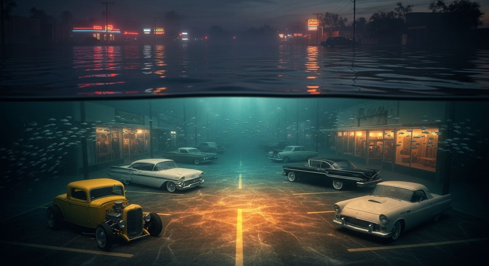

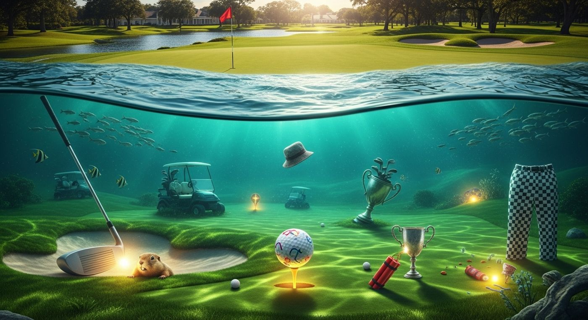

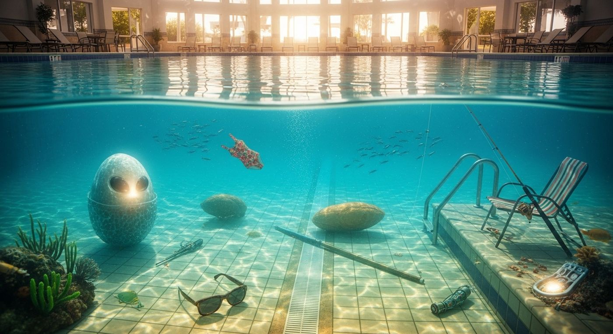

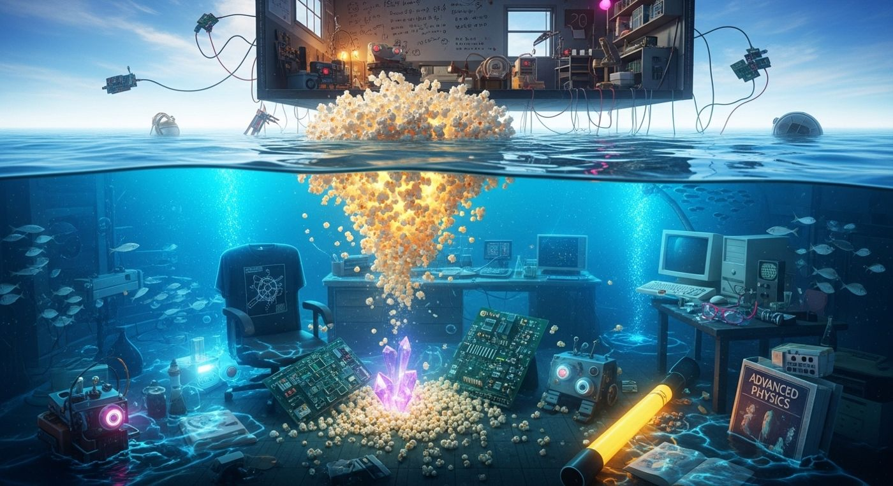

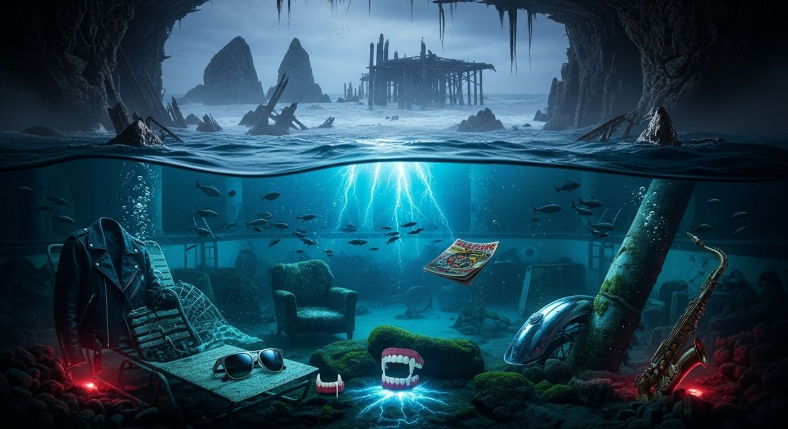


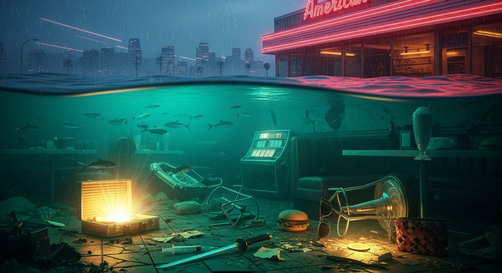

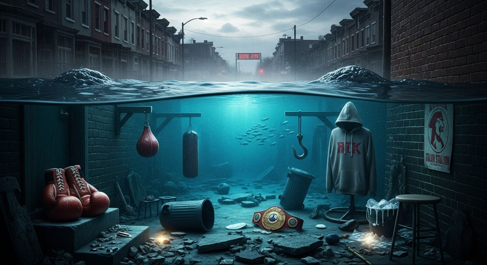

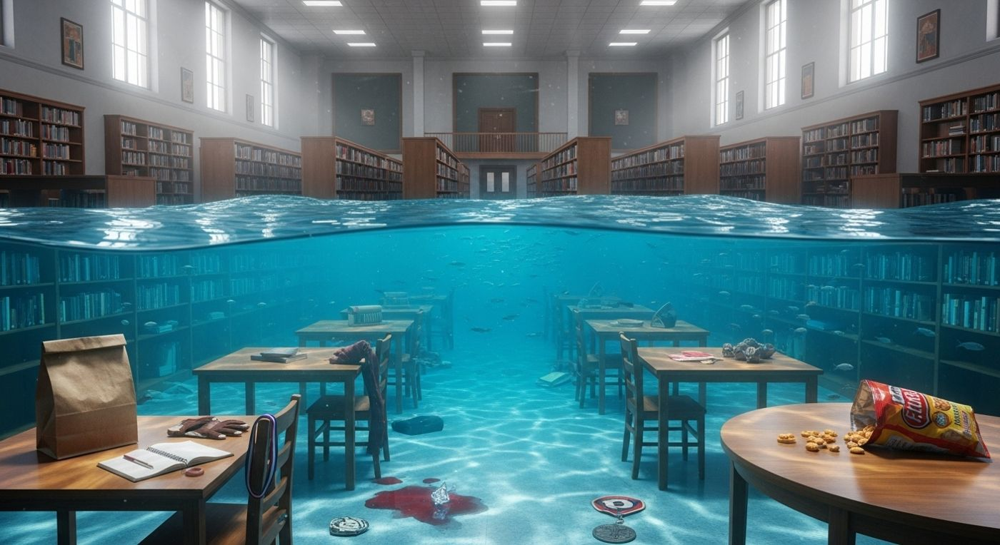

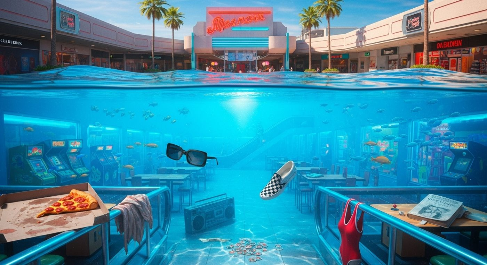

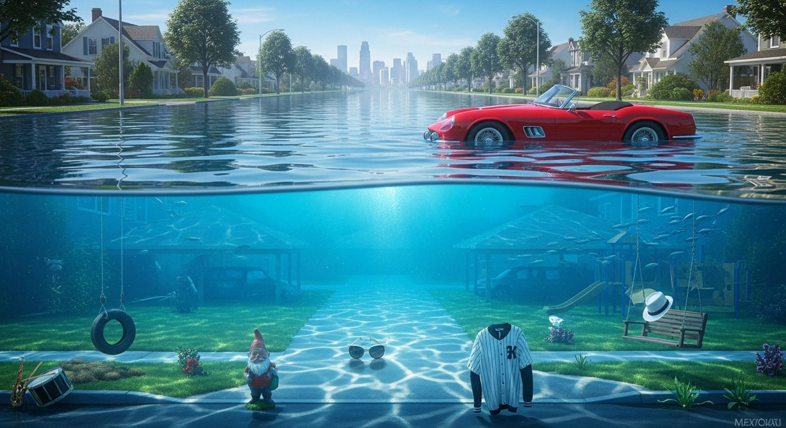

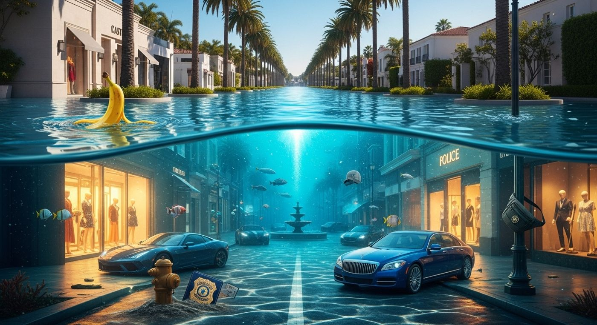

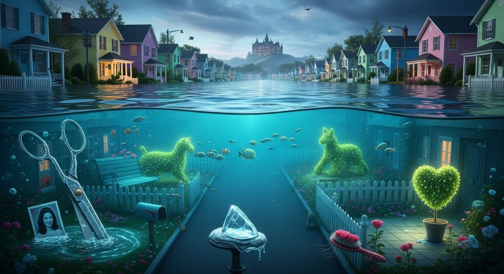

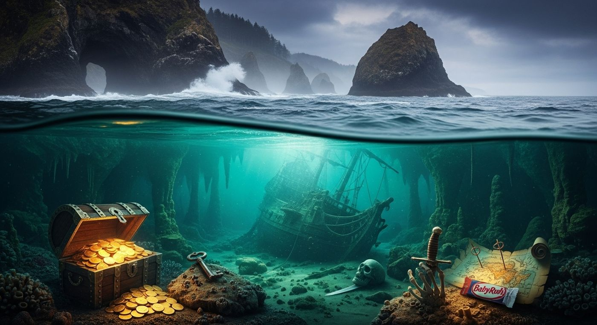

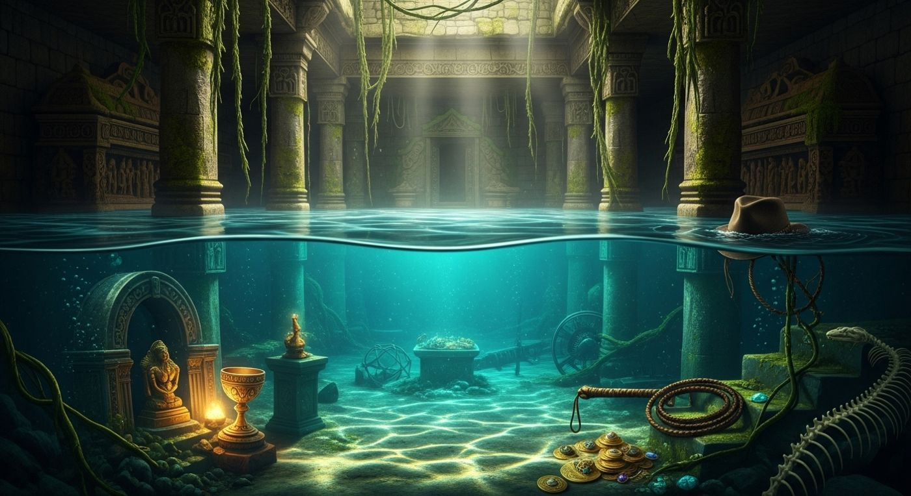
Made with AI: Google Flow, OpenArt, Veo and Seedance, depending on the piece.